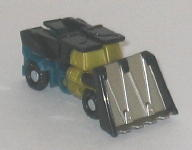
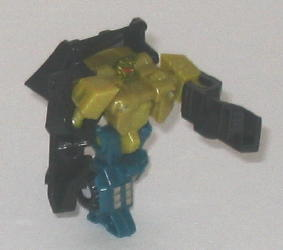
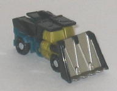
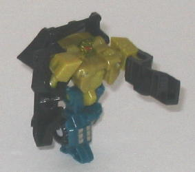
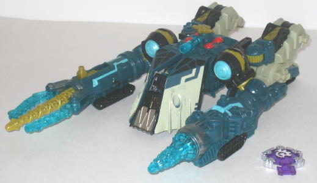
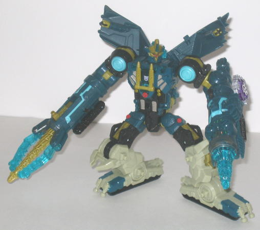
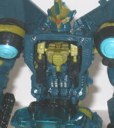

Heavy
Load
Heavy
Load
 
Allegiance : Minicon
Size : Mini-Con
Difficulty of Transformation : Very Easy
Color Scheme : Black, dark bluish green, dull milky greenish tan, and some silver, dull greenish bronze, and red
Rating : 7.0
Heavy
Load


Allegiance
: Minicon
Size
: Mini-Con
Difficulty of Transformation
: Very
Easy
Color Scheme
: Black, dark bluish
green, dull milky greenish tan, and some silver, dull greenish bronze,
and red
Rating
: 7.0
Heavy Load's alternate
mode is a bulldozer/dump truck hybrid. Overall, this is a pretty good alternate
mode for a Minicon-- the proportions are as close to realistic as one can
expect for such a small toy, and he's got a fair amount of mold detailing,
though he does definitely need some more paint detailing, especially on
the windows. The use of dark bluish-green is a tad of an odd choice for
a bulldozer (although it doesn't clash), but otherwise his color scheme
fits and works well with the toy. With the exception of the somewhat obvious
robot feet on the back end of the vehicle, otherwise this is a robot extra-free
mode. The shovel on the front end can move up and down, but it does have
a tendency to come off a bit easier than I'd like, especially in robot
mode-- this is the single biggest downside to the toy, as it gets pretty
annoying after a while. Another more minor problem is that, given the way
the pegs on the legs attach to the peg holes at the bottom of the roof,
it's pretty hard to get the two roof halves together enough where they
don't have a noticeable gap in betwen them. His Minicon symbol is right
side of this mode, near the back end.
Heavy Load has one of
the most unique robot modes out of the Minicons, although unique in a good
way. He's very much the "little tough guy" of the Minicons, given that
A. He's smaller than almost any other Minicon except
Ramjet
and B. He's got a tiny head, large, long arms, and relatively short legs.
I think these differences in proportion were intentional, and they really
add personality to this toy. The face sculpting is also pretty cool-- I
like the "big visor-face with a surrounding helmet" look, it looks pretty
evil. I don't like how the lower arms are so flat and oddly-shaped for
arms, however, and the fists really should be more noticeable on them.
His articulation is slightly above-average for a Minicon-- he can move
at the shoulders, elbows (on ball joints), and hips. He can also, due to
his transformation, bend downwards at the stomach, in a manner similiar
to
Metroplex
. No knee articulation, though.
Heavy Load is one of
the better, more unique Minicons, and his robot mode carries quite a bit
of personality. He has a few weaknesses, but the only annoying one is his
shovel, which pops off far too easily.
 Menasor
Menasor



Allegiance
: Decepticon
Size
: Ultra
Homeworld
: Giant Planet
Cyber Key Code
: us4r
Difficulty of Transformation
: Very
Easy
Color Scheme
: Dark bluish green,
dull pasty tannish off-white, black, and some silver, red, dull milky greenish
tan, dull greenish bronze, light pale greenish blue, and transparent greenish
blue
Rating
: 7.0
No longer a G1 Decepticon
car gestalt, Menasor's name is being reused, this time on the only Giant
Planet Decepticon toy! In vehicle mode, Menasor is a... drill thing. I
have to say, this is definitely the major downside to this toy-- this has
got the be the laziest alternate mode out of any of the Transformers I
have. It is so incredibly obviously the robot mode crouched down with a
shovel over its face, something that is especially bad because of the rather
big Ultra class size of this Transformer. I mean, there isn't even an ATTEMPT
to try to unite the rear leg-tread pieces or anything like that. I like
futuristic, alien vehicles and all, but only if they're not just an excuse
to skimp on the alt mode. However, extreme laziness of the alternate mode
aside, this mode does have some good points and pretty neat features (the
vast majority of which carry over to the robot mode, given how similar
the two modes are). The color scheme of bluish-green and various shades
of tan may not be the first that comes to mind when thinking of a mining
vehicle, or the most fitting, but none of the colors clash and, as a whole,
it looks pretty good. The toy's also covered in mechanical mold detailing
everywhere, and Menasor has lots of paint apps, relatively evenly spaced
around the figure so that not any one part looks boring. I especially like
the "worn metal" paint apps on the ends of both arms. Menasor's Cyber Key
gimmick is rather lame, though-- insert his key into its slot on the side
of the left arm, and a "mining" noise is emitted while a light inside the
transparent drill blinks on and off a few times. I would've preferred to
have the drill spin too, but at least you can manually do that by either
rolling the wheel on the topside of the drill arm or just rolling the vehicle
mode along on a flat surface. On his other arm, Menasor sports the only
Minicon-activated gimmick in the entire line, at least when it comes to
new molds-- put a Minicon on the port on the top of this arm and slide
it forward, and two claws flip forward from the sides of the arm while
the corkscrew drill not only slides forward, but also twirls around at
the same time! A very cool gimmick, though sometimes a little more force
than I'd like is necessary to get it going. (The toy also has five other
static Minicon ports, in case you're wondering-- one of the top of the
other arm, and two on each of the rear tread-legs.) Menasor sports one
other gimmick in this mode-- if you open up his shovel halves a bit, you
can stick Heavy Load's vehicle mode with the shovel tilted forward in there,
for a bit more pushin' power. In theory, it's cool-- however, it's entirely
too hard to get Heavy Load rested snugly in between those two shovel halves
that I usually just forget about it and give up in frustration.
Menasor's robot mode
is largely similar to his vehicle mode, so most of the same comments regarding
the colors and gimmicks apply to both modes. One new gimmick is available
in Menasor's robot mode, though, and it's pretty cool-- Heavy Load, in
robot mode, can fit inside Menasor's chest! (Almost makes you wonder if
Heavy Load is the TRUE brains behind this Giant Planet 'Con, heh...) As
for the overall look, Menasor has an extremely cool-looking, well-proportioned
robot mode-- not that it wouldn't be easy to look so good here, considering
his vehicle mode. The shovel halves on his shoulders actually complement
the look of the mode instead of just looking like kibble, and although
Menasor doesn't have any actual hands, the two drills help to give him
a more inhuman, menacing appearance fitting for a Decepticon. The robot
head design is also very alien, with the eyes to only recognizable features,
but it still looks very cool and complements the look of the mode quite
a bit. Menasor also has very, very good articulation-- he can move at every
major point besides the waist, and he also has very good ankle articulation.
Given this, his large feet, and no real heavy back kibble, you can get
a TON of poses out of this guy. One last note-- Menasor also has a "work
mode" like Metroplex, but it's an awfully laughable mode, since all you
do is seperate Menasor's waist halves and turn his legs backwards. I don't
know what kind of "mode" that is...
Cybertron Menasor has
a very cool, very inhuman and evil-looking robot mode, along with a nice
color scheme and some pretty awesome gimmicks. It's a shame his vehicle
mode is so lazy and obviously just his robot mode on its stomach, or he'd
earn a much, much higher rating.
Review by Beastbot